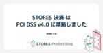

STORES Product Blog
https://product.st.inc/
こだわりを持ったお商売を支える「STORES」のテクノロジー部門のメンバーによるブログです。
フィード

Dokka移行でちょっとだけつまずいた話
STORES Product Blog
こんにちはこんばんは。STORES のn-sekiです。 STORSE 決済 というサービスのAndroidアプリ/SDKを開発しています。 本記事ではアプリではなく、SDKでの開発トピックを取り上げようと思います！ このSDKは決済 SDKと呼んでいて、モノとしてはAndroidライブラリ（aar）になっており、アプリに組み込んでいただくことでクレジットカードなどのキャッシュレス決済手段をかんたんに導入できます。 coiney.com ライブラリなので開発者向けにAPIドキュメントも公開しているのですが、もともとJavaで実装されていたこともあり、javadocコマンドを使って生成したドキュ…
1日前

STORES はRubyKaigi 2024にNursery Sponsorとして協賛します 6
6
STORES Product Blog
こんにちは、技術広報のえんじぇるです。 STORES は2024年5月15日（水）〜17日（金）に沖縄県那覇市で開催されるRubyKaigi 2024にNursery Sponsorとして協賛します。 託児サポートの詳細については下記サイトに記載しておりますので、希望される方はご覧ください。美ら海水族館に行くアクティビティも用意しています🐠 sites.google.com STORES がNursery Sponsorをやる理由 STORES は2023年7月にダイバーシティ方針を掲げ、多様な社員が「らしさ」や得意を生かすことで、顧客に価値を提供し続ける組織づくりを行なっています。多様な属性…
3日前
Rails Girls Tokyo 16thをオーガナイズしました 1
STORES Product Blog
こんにちは、技術広報のえんじぇるです。 3月1日、2日にRails Girls Tokyo 16thを開催し、maimuさんと一緒にオーガナイザーをさせていただきました。Rails Girls Tokyo 15thに参加した時は次回のRails Girls Tokyoを自分が開催するとは思ってなかったのですが、開催できてよかったですし、Girlsの方にもオーガナイザーという関わり方を知ってもらえればと思い、ブログをしたためます。 一緒にオーガナイザーをしたmaimuさんのブログはこちら▼ maimux2x.hatenablog.com Rails Girlsを開催しようと思った理由 私はRai…
8日前

STORES 決済 は PCI DSS v4.0 に準拠しました
STORES Product Blog
こんにちは、 STORES 決済 でバックエンドエンジニアをしている東瀬野です。 STORES 決済 では前身となるコイニー株式会社の時代からクレジットカードのデータを安全に取り扱うことを目的として策定された PCI DSS のセキュリティ基準に準拠をしております。 2022年3月にこの PCI DSS が大幅アップデートされ、 v3.2.1 から v4.0 へと更新されました。 本記事では PCI DSS v4.0 準拠までの道のりや対応などを紹介できればと思います。 STORES 決済 は例年1月中頃に本監査を行っており、そこへの対応に向けたお話をしていきます。 PCI DSS とは 正式…
14日前

STORES はtry! Swift Tokyo 2024に協賛します
STORES Product Blog
こんにちは、STORES レジアプリでiOSエンジニアをしている@nekowenです。 3月22日(金)から24日(日)までの3日間、try! Swift Tokyo 2024が開催されます。 try! Swift Tokyoは世界最大規模のSwiftに関する国際カンファレンスです。世界中から開発者が集い、さまざまなSwiftの知識や活用方法が披露されます。 前回の開催から5年ぶりとなるため、個人的にもとてもワクワクしております。 この度 STORES ではBRONZEおよびDIVERSITY & INCLUSIONスポンサーとして協賛させていただくこととなりました 🎉 この記事ではスポンサー…
14日前
とほほさんのキーノートに感動、ベストスピーカーに聞く登壇の感想、YAPCはコミュニティが混ざる場。YAPC::Hiroshima 2024 非公式ふりかえり会文字起こしレポート
STORES Product Blog
2024年2月13日に『YAPC::Hiroshima 2024 非公式ふりかえり会』を開催しました。イベントでお話した内容を文字起こし形式で紹介します。 hey.connpass.com 登壇者紹介 STORES hogelog：YAPC初参加 ヨヨイ：YAPCは3、4回参加経験あり hiromu：YAPC初参加 藤村：YAPC初参加 えんじぇる：YAPC初参加 スマートバンク 三谷：YAPC初参加、YAPC::Hiroshima 2024でベストスピーカー賞を受賞 nyanco：YAPCスタッフ 前夜祭の感想 hogelog：『YAPC::Hiroshima 2024 非公式ふりかえり会』…
21日前
STORES はPPL 2024にゴールドスポンサーとして協賛します
STORES Product Blog
STORES は3月5日（火）〜7日（木）に開催される第26回プログラミングおよびプログラミング言語ワークショップ PPL 2024にゴールドスポンサーとして協賛します。この記事では STORES のPPL 2024関連情報をまとめています。 発表 Rubyコミッターの遠藤と笹田が採択されました。 『型注釈のないRubyプログラムのデータフロー解析に基づいたIDE支援』 発表者：遠藤 侑介 日時：3月5日（火）11:10–12:10 セッション3 ポスター・デモ(1) グループA 『Rubyにおける M:N スレッドの実装』 発表者：笹田 耕一 日時：3月6日（水）16:30–17:45 セッ…
23日前
STORES ブランドアプリ の iOS チームで一ヶ月のインターンに参加しました！
STORES Product Blog
こんにちは、Megabits です。今年の二月に STORES ブランドアプリ の iOS チームでインターンに参加しました。この一ヶ月でやったことと感想を皆さんに紹介したいと思います。 この後特にアクセシビリティ関連の私の経験談もいろいろ書きました。インターンの話に興味がある方も、技術に興味がある方も楽しく読めると思いますので、ぜひ最後まで読んでいただければと思います。 私がインターンに来ました プログラミングの仕事をしに来ましたが、実は私はデザインの学科に所属しています。そして、留学生です。 日本に来る前に、高校生の時から自分でアプリ開発を独学して、個人開発者として活動してきました。個人開…
1ヶ月前
サービス間通信を GraphQL Schema Stitching で実装する
STORES Product Blog
はじめに STORES 予約でエンジニアをしているhiromu617です。この度 STORES では STORES レジ に STORES 予約 がもつ予約情報を連携できる機能をリリースしました。 この機能を提供するにあたってサービス間で通信をする必要がありました。サービス間の通信には、Schema Stitchingという技術を活用しています。 本記事では、Schema Stitchingの活用例について紹介します。 どのような機能か STORES レジ に STORES 予約 がもつ予約情報を連携できる機能です。STORES 予約を通じて入れた予約情報を元に STORES レジ で会計する…
1ヶ月前
Jetpack Compose の Padding vs Spacer
STORES Product Blog
Padding を使うのか Spacerを使うのか こんにちは！STORES 決済 Androidエンジニアのみっちゃんです！ JetpackComposeでUIを作るときに、Composable同士の間に余白を置きたい時はpaddingやSpacerを使って実現できます。 最近、STORES 決済 Android アプリではAndroidViewからJetpackComposeへ移行しているのですが、チームメンバー全員がCompose経験豊富なわけではなく、実装やレビュー時に「ここはpaddingを使った方がいいのか？Spacerなのか...？？」と自信を持って実装・レビューできない！という…
1ヶ月前
安否確認サービスをコーポレートエンジニアが導入するとどのような運用設計をするのか
STORES Product Blog
こんにちは、STORES のPX部門IT本部でマネージャー兼コーポレートエンジニアをしている中野（@howdy39）です。 STORES では今年に入ってトヨクモ社の安否確認サービス2をエンタープライズプランで導入しました。 もともと安否確認用途としては別のクラウドサービスを使っていたのですが、下記のような理由でシステム切り替えを行いました。 メールを見ない人もおおいのでLINE連携ができるようにしたい（安否確認の回答スピードと回答率をあげたい） 災害発生時に安否確認通知を自動送信したい（初期対応に時間がかかる） アカウント発行・削除を自動化したい（運用コストをなるべくかけたくない） 本記事で…
1ヶ月前
STORES はシルバー＆学生支援スポンサーとしてYAPC::Hiroshima 2024に協賛します
STORES Product Blog
こんにちは、技術広報のえんじぇるです。 STORES は2月10日（土）に開催されるYAPC::Hiroshima 2024にシルバー＆学生支援スポンサーとして協賛します。 この記事では STORES のYAPC::Hiroshima 2024関連情報をまとめています。開催前から開催後までみなさんとYAPCを楽しもうと思っているので、ぜひご覧ください。 YAPC::Hiroshima 2024 非公式予習会に参加しました 今回のYAPC::Hiroshima 2024には STORES から5名で参加するのですが、うち4名が初めてのYAPC参加です！YAPCってどんな感じなんだろうと不安に思っ…
2ヶ月前
地道にトライ&エラーを繰り返せるか、スケートボードとソフトウェア開発の共通点【ep.27 #論より動くもの .fm】
STORES Product Blog
CTO 藤村がホストするPodcast、論より動くもの.fmの第27回を公開しました。今回は2023卒入社のエンジニアhiromuとWeb開発をするようになったきっかけ、新卒1年目の時の仕事、スケートボードについて話しました。 論より動くもの.fmはSpotifyとApple Podcastで配信しています。フォローしていただくと、新エピソード公開時には自動で配信されますので、ぜひフォローしてください。 podcasters.spotify.com テキストで読みたい方は下記からご覧ください。 Railsチュートリアルで感動、Web開発の道に 藤村：こんにちは、論より動くもの.fmです。論より…
2ヶ月前
Vue Fes Japan 2023の感想/Cloudflare WorkersとRemixが快適すぎた/Web Infraに注目してる【ep.26 #論より動くもの .fm】
STORES Product Blog
CTO 藤村がホストするPodcast、論より動くもの.fmの第26回を公開しました。今回はフロントエンドエンジニアのうしろのことVue Fes Japan 2023の感想やCloudflare WorkersとRemix、最近注目している技術について話しました。 論より動くもの.fmはSpotifyとApple Podcastで配信しています。フォローしていただくと、新エピソード公開時には自動で配信されますので、ぜひフォローしてください。 podcasters.spotify.com テキストで読みたい方は下記からご覧ください。 Vue Fes Japan 2023 面白かったね 藤村：こん…
2ヶ月前
「Youはなぜコントリビュータに？」Vue Fes Japan 2023 出張版【ep.25 #論より動くもの .fm】
STORES Product Blog
CTO 藤村がホストするPodcast、論より動くもの.fmの第25回を公開しました。今回はVue Fes Japan 2023のスペシャルランチセッションで公開収録をしました。ゲストは、Vue Fes Japan 2023で登壇したwattanxです。 論より動くもの.fmはSpotifyとApple Podcastで配信しています。フォローしていただくと、新エピソード公開時には自動で配信されますので、ぜひフォローしてください。 podcasters.spotify.com テキストで読みたい方は下記からご覧ください。 複数プロダクトの管理画面を統一したい気持ち vs 難易度 藤村：こんにち…
2ヶ月前
Rubyが楽しくて良い言語になることが STORES の未来につながる【STORES.rb × Asakusa.rb 文字起こしレポート】
STORES Product Blog
2023年9月26日に開催した『STORES.rb × Asakusa.rb』のトーク部分を文字起こし形式でお届けします。 hey.connpass.com STORES がRubyコミッターを迎えた理由 藤村：STORES.rb×Asakusa.rbにお越しいただきありがとうございます。よろしくお願いします。ご存知の方も多いと思うんですが、笹田さんと遠藤さんが STORES に入社されました！やったー！プレスリリースが9月1日に出たんですね。写真を撮りました。 www.st.inc 笹田：なんかプレスリリースに出る系エンジニアって言われました。 遠藤：入社時にプレスリリースを出すことを要求す…
3ヶ月前
STORES モバイルだより 2023冬号
STORES Product Blog
こんにちは、STORESでモバイルエンジニアをしている @tomorrowkey です。 2023年もおわりに近づいてきたので、今年のSTORES モバイルだよりをお送りしたいと思います。 半年くらいのペースでだしたいところだったのですが、前回 のおたよりから1年も経ってしまいました。 😜 それでは、STORESのモバイルプロダクトチームが今年どんな活動をしてきたか振り返りたいと思います。 各プロダクトの成長 QUICPay対応（STORES 決済、STORES レジ） STORES 決済・STORES レジの2つのプロダクトでQUICPayを使った支払いに対応しました。 決済手段の追加はどの…
3ヶ月前
入社後半年が経ったので振り返ってみる
STORES Product Blog
はじめに STORES レジ でアプリ開発をしている@nekowenです。 自分は2023年6月にSTORESに入社し、早いものでもう半年が経ちました。 入社当初から毎日あたらしい知見にたくさん触れることができ、楽しく仕事ができています。 年の瀬で良いタイミングでもありますので、この記事では自分が入社してから今までレジチーム内でやってきたことを振り返ってみます。 Renovateの導入 レジではKingfisherやSwiftLintといったライブラリ・ツールを利用していますが、定期的にアップデートする仕組みがありませんでした。 ライブラリ・ツールは入れたらおしまいではなく、アップデートの追従…
3ヶ月前
プロと読み解くRuby 3.3 NEWS
STORES Product Blog
テクノロジー部門CTO室の笹田（ko1）と遠藤（mame）です。今年の 9 月から STORES 株式会社で Ruby (MRI: Matz Ruby Implementation、いわゆる ruby コマンド) の開発をしています（Rubyのこれからを STORES で作る。Rubyコミッター笹田さん、遠藤さんにCTOがきく「Fun」｜STORES People ）。お金をもらって Ruby を開発しているのでプロの Ruby コミッタです。 本日 12/25 に、恒例のクリスマスリリースとして、Ruby 3.3.0 がリリースされました（Ruby 3.3.0 リリース）。クックパッド開発者…
3ヶ月前
CircleCIのslowest tests大改善
STORES Product Blog
こんにちは！ STORES でWebエンジニアをしている hsm_hx です。 6月に STORES に中途入社し、ネットショップやレジを中心に機能追加や改善・運用をするチームでバックエンドやフロントエンドの開発を担当しています。 STORES ネットショップの開発チームでは、隔週〜毎月のペースで「大改善デー」という催しを行っています。 この記事では大改善デーについてと、実際にわたしが11月の大改善デーで行ったトライをご紹介したいと思います。 大改善デーとは STORES ネットショップの開発チームでは、月に1回、開発ラインごとにプロダクト開発から離れて自由な技術課題に取り組む日を設けています…
3ヶ月前
RailsでのJSON Serializationをもっと簡単にやる
STORES Product Blog
この記事は STORES Advent Calendar 2023 の30日目の記事です。 はじめに STORES 予約でエンジニアをしている望月です。 近年、Webアプリケーションのフロントエンド開発において、Reactなどのモダンな技術がリッチなユーザーインターフェースの実現を目指して頻繁に採用されるようになりました。 これに伴いRailsアプリケーションの開発方法も変化しています。 従来のRailsによるView層でのフロントエンド実装から脱却し、Railsは主にAPIサーバーとしての役割を果たす構成が増えてきました。 Railsを基盤に構築されているSTORES 予約でも、従来のRai…
3ヶ月前
Pull Request は早くマージしたい
STORES Product Blog
こんにちは。 STORES ブランドアプリのチームで iOS エンジニアをしている榎本( @enomotok_ )です。 これは STORES Advent Calendar 2023 の記事です。 私が普段仕事をしていて感じるPull Request (以下 PR )を迅速にマージすることの効用について、日々の取り組みと考えを言語化してまとめます。 なぜ Pull Request を早くマージしたいか 私たちは日々多くの仕事に忙殺されています。 PR を完成させたら、基本的には次のタスクに取り掛かります。 PR の生存期間が長いと、次のタスクとのマルチタスクが増え、それが長引くことになります…
3ヶ月前
チキチキSwiftData入門
STORES Product Blog
この記事は STORES Advent Calendar 2023 の29日目の記事です。 はじめに こんにちは、 STORES レジ iOSエンジニアmonolithic-adamです。 今日は誕生日の祝いでアドベントカレンダーの記事を書いています！🎂🥳 最近SwiftDataを遊んでみる時間作って、軽くSwiftDataの入門を書いてみたいと思います！ SwiftData 残念ながらiOS17+😭 Appleのドキュメンテーションから: SwiftDataは宣言的なコードを使用してデータを永続化することを容易にします。 通常のSwiftコードを使用してデータをクエリおよびフィルタリングでき…
3ヶ月前
STORES 予約 におけるFullCalendarの活用事例
STORES Product Blog
この記事は STORES アドベントカレンダーの12月20日の記事となります。 はじめに こんにちは、 STORES 予約 でエンジニアをしているyuta07です。 この度 STORES 予約 では、12月に予約カレンダーを正式リリースしました。 突然ですが、Web上でカレンダーの開発をするとなった場合、ほとんどの場合でまずライブラリの使用が選択肢に上がるのではないでしょうか。 私個人としてはライブラリに頼ることを少なくしたい思いはありますが、実際はライブラリを使用して工数の削減なりメリットを享受することが多いです。 （もちろん仕様を満たすことができなければ自作という選択肢になりますし、ライブ…
3ヶ月前
オフラインカンファレンスのすゝめ
STORES Product Blog
はじめに この記事は STORES Advent Calendar 2023 の28日目の記事です。 こんにちは！ STORES 株式会社 リテール本部でエンジニアをしています、永尾です。 気がつけば 2023 年も残すところ 1 週間と少しです。 今年は感染症による規制が緩和され、オフラインのイベントが少しずつ増えていった 1 年だったように思います。 私も今年は Vue Fes 2023 に参加したのですが、そこでオフラインカンファレンスの良さを改めて感じることができました。 この記事では、そのイベントの中で自分が感じたことを書き綴っていきたいと思います。 そしてこの記事を通じて、オフライ…
3ヶ月前
モバイルアプリのリリースから振り返る STORES 決済 の 2023年
STORES Product Blog
師走！！ こちらは STORES Advent Calendar 2023 の 28日目の記事です。 product.st.inc 年末ですね！ さて、去年も年末に モバイルアプリのリリースから1年を振り返ったので 今年も振り返ります。 ということで、こんにちは！ STORES 決済 モバイルチームの Engineering Manager、 iOS アプリ・SDKの開発を担当しております。 いわいです。 ※昨年同様 STORES 決済 モバイルチームはアプリ以外に STORES 決済 SDK もリリースしていますが、そちらは割愛します。 では早速2023年 iOS と Android の S…
3ヶ月前
STORES 予約 コンテナ化への道のり 後編
STORES Product Blog
はじめに この記事は STORES Advent Calendar 2023の 27日目の記事です。 STORES 予約 でバックエンドエンジニアをしているaao4seyです。 昨年 STORES 予約 はアプリケーション実行基盤をEC2からECS環境に移行しました。(以下ECS化と呼びます。)その際の設計〜移行まで内容を STORES 予約 コンテナ化への道のり 前編 にて公開させていただいておりました。この記事ではそれに続く後編として「切替後に出た問題」、「追加で対応したこと」や「当初の課題が解決されたのか」についてご紹介させていただければと思っています。 (前編を読んでいただいてからのほ…
3ヶ月前
認識を合わせるって難しい
STORES Product Blog
この記事は STORES Advent Calendar 2023 の27日目の記事です。 こんにちは！ STORES レジ ・ STORES 予約 のモバイルアプリを開発している iOS / Android エンジニアの @satoryo056 です。 先日、新卒1年目の頃以来久しぶりにストレングスファインダーを実施しました。 上位の5つは「回復志向」「調和性」「適応性」「慎重さ」「公平性」で、問題解決に取り組んだり周囲の合意やすり合わせをしたり、状況に合わせて行動するタイプなどといった結果でした。 最近は特に、仕事をするうえで仲間と認識を合わせることは重要だと私は思っていたので、結果を通し…
3ヶ月前
サービス間でのpub/sub通信と一貫性
STORES Product Blog
STORES でサーバーサイドエンジニアをしている片桐と申します。 STORES は元々別々の会社であったプロダクトが集まってできた会社です。各プロダクトのサービスは元々それぞれ独立したアプリケーションとして動いており、STORES プラットフォームとしてこれらのサービスを繋げていくには、さまざまなサービス間通信が求められるようになってきています。今回は、サービス間通信のうち、pub/sub の、特にpublishの実装についてお話しさせていただきます。 pub/subとは pub/subとは、サービス間で情報をやり取りする手法の一形態で、publish / subscribe の略です。pu…
3ヶ月前
STORES 予約 のデプロイフロー今昔
STORES Product Blog
はじめに こちらは STORES アドベントカレンダーの12/15日分の記事となります。 STORES 予約 のバックエンドエンジニアをしている矢作です。 私がこのプロダクトの開発に携わり出してから約3年半ほど経過しております。 その中で何度かデプロイパイプラインの更新が発生しており、今回は自分が把握している中でどう変わっていったのかについてまとめてみました。 各自のローカルPCからcap deploy Railsで開発されている方であれば馴染みのある方も多いcapistranoを利用してデプロイしていました。 正確には今も一部でcapistranoを利用したデプロイが残っています。 depl…
3ヶ月前